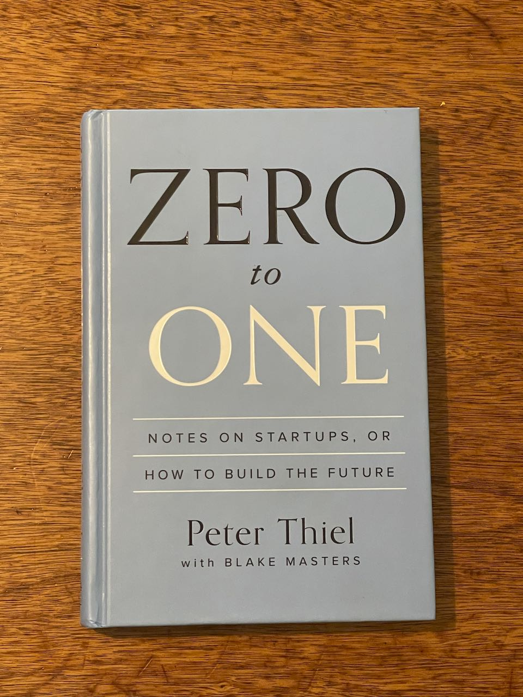

I have traveled to Tibet couple years ago, it was mesmerizing. I have visited the famous Potala Palace and seen how the monk practice their daily ritual. The scenery there is unlike anywhere else, the most challenging part has to be the altitude sickness, it is recommended to take specific medicine before heading into there.
Hidilao is my favorite restaurant, it is the best hotpot food chain. I can never get tired to eat the food they offered, because there are many combinations you can choose from the menu. Each soup base offers you different taste even when you eat the same item.
My favorite food has to be hotpot, I usuaully pick half spicy and half non-spicy soupbase since most of time you will be eating this with family or friends. I like to dip the meat and seafood first, so it gives the broth more taste to it. After the first couple rounds, I like to serve the veggies or noodle in the soup, which by then should have plenty of flavors.
| Book Name | Cover | Author | Summary |
|---|---|---|---|
| Meditations | |
Marcus Aurelius | It emphasizes living in accordance with nature, focusing on what you can control (your thoughts and actions), and accepting what you cannot. |
| Zero to One |  | Peter Thiel | Building truly valuable companies requires creating something entirely new (going from 0 to 1) rather than simply expanding existing markets (going from 1 to n), and that achieving a monopoly in a specialized niche is key to long-term success. |
| Blink | Malcolm Gladwell | The book explains what happens when you listen to your gut feeling, why these snap judgments are often much more efficient than conscious deliberating, and how to avoid your intuition leading you to wrong assumptions. | |
| Dune Part One | |
Frank Herbert | the House Atreides, led by Paul Atreides and his father Duke Leto, are sent to the harsh desert planet Arrakis to control spice production, but face a treacherous trap set by their enemies, resulting in Paul and his mother Lady Jessica's escape and eventual alliance with the Fremen. |